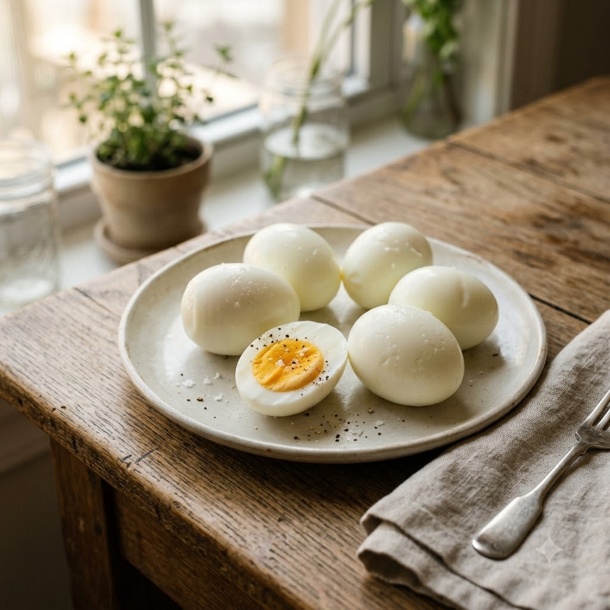

Air Fryer Perfect Boiled Eggs

Air Fryer Perfect Boiled Eggs
Airfryer – Bake 130°C 15 min makes 6
Gluten-Free • Eggetarian • High-Protein • Everyday
Ingredients
- 6 eggs, room temperature
- Water for the ice bath
Method
1Preheat: Preheat the Airfryer to 130°C for 4 minutes before adding the food to the basket.
2Place eggs directly in the basket in a single layer, without overlapping.
3Air-fry at 130°C for 15 minutes for firm yolks (13 minutes for a slightly soft centre).
4Immediately transfer to an ice bath for 5 minutes to stop cooking.
5Peel once cool and use in salads, sandwiches, or as a snack with chaat masala.
Tip: Cooking time varies by egg size and airfryer model — test one egg first time round and adjust by a minute either way.